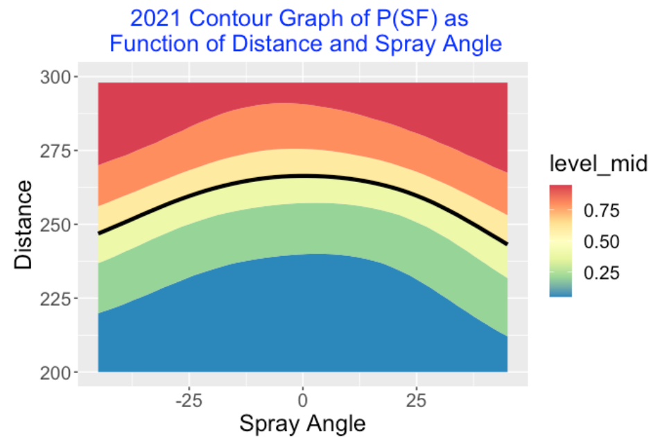
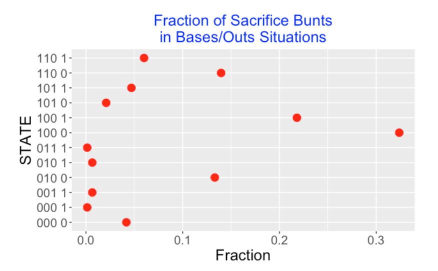
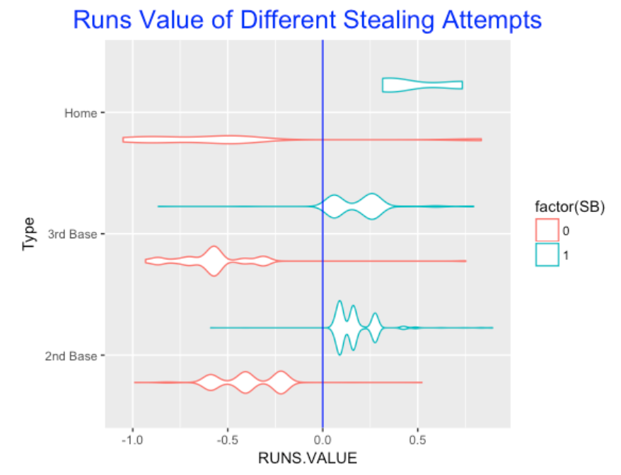

Game Strategy
1 Introduction
This article contains a collection of posts from the “Exploring Baseball Data with R” blog on the general topic of baseball game strategy. Section 2 contains two articles on sacrifice hits. “Sacrifice Fly: When to Send the Runner?” explores how the success of a sacrifice fly attempt depends on the depth and direction of the batted ball to the outfield. “Demise of the Sacrifice Hit” explores issues related to the use of the sacrifice hit in Major League Baseball.
Section 3 has two articles on the use of bunts in MLB. “A Historical Look at Bunts” looks at the use of bunts both as a sacrifice and as an infield hit. “Exploring 2015 Bunts” takes a detailed use of bunts among teams and players in the 2015 season.
Section 4 contains two articles on stolen base attempts. The first article is a tribute to the 2013 Kansas City Royals who were remarkable in their propensity for stealing bases. The second article illustrates the use of play-by-play Retrosheet data to explore stolen base attempts and successes in the 2016 season.
Section 5 provides an exploration of the use of the designated hitter over 49 seasons of baseball. We discuss the use of the DH, where this hitter hits in the batting order and the benefit of the DH over non-pitchers.
2 Sacrifices
2.1 Sacrifice Fly: When to Send the Runner?
2.1.1 Introduction
Looking at Baseball-Reference’s batting year-by-year averages, I observe an increase in the number of sacrifice flies in 2022 per team per game compared to the previous two seasons. A sacrifice fly (SF) is recorded when a runner on third advances home on a fly ball hit with 0 or 1 outs in the inning.
Reflecting on sacrifice flies, I think of SF as a desirable outcome in a decision problem. The batting team’s third base coach is watching a fly ball hit to the outfield and has to decide whether to send the runner home or not. (I am assuming the coach is making this decision, but I imagine that sometimes the runner makes the decision on his own.). What factors are involved in this decision?
The depth and direction of the fly ball. Generally, the baserunner will attempt to run home on a deep fly. Also the direction of the fly ball (left, center or right) on the field may be relevant.
The speed of the runner. A coach might be more willing to send a speedy runner home.
The arm of the fielder. A coach might be less willing to send the runner if the outfielder has a strong and accurate throwing arm.
The game situation. In a close game (close score and later innings), the coach may be a bit more aggressive in sending the runner home.
By using publicly available Statcast data, I’ll see how the success of a sacrifice fly depend on the depth and direction of the batted ball hit to the outfield. Then I will speculate how the newer Statcast location data can help in this decision-making.
2.1.2 Location of Batted Balls
Using Statcast data for the 2021 season, I collect all of the balls put into the air (with launch angle at least 10 degrees) hit at least 200 feet with outcomes “field out” or SF when there was a runner on 3rd with 0 or 1 outs. Here is a plot of the batted ball locations colored by the sacrifice fly outcome. Clearly, sacrifice flies occur with deeper fly balls but there is an area in the middle of the field where there is a mix of SF and not-SF outcomes.
What were the locations of the fly balls when the runner was thrown out at home? Below I graph the locations of the no-SF batted balls colored by a variable Out_at_Home indicating if there was an out play at home. It is interesting that the deepest “out at home” fly balls occurred in center field.
2.1.3 Modeling SF Result as a Function of Distance
Since the fly ball distance seems to be a useful predictor of a sacrifice fly, that motivates the use of the logistic model
\(\log\left(\frac{p}{1-p}\right) = a + b DISTANCE\)
where \(p\) is the probability the fly ball (either field-out or SF) is a sacrifice fly and \(DISTANCE\) is the distance (in feet) of the catching location from home plate. After fitting this model, the following graph displays the estimated \(p\) as a function of distance. The distance value where the estimated probability is 0.5 is 257.43 feet – distances further than 257.43 feet have predicted SF probabilities over 0.5.
2.1.4 Adding Spray Angle as a Predictor
Is the direction of the flyball useful in predicting the chance of a SF? We can address this by fitting the generalized additive model
\[\log\left(\frac{p}{1-p}\right) = s(\phi, DISTANCE)\]
where \(\phi\) is the spray angle in degrees (seen from the catcher’s viewpoint) and \(s()\) is a smooth function. Below I display the fitted probability of SF as a function of the two variables. I have indicated by a black line the curve where the fitted probability is 0.5. It is interesting that the chance of a SF on a fly ball about 250 along the 3rd-base line is similar to the chance of a SF on a fly ball dead center at 265 feet. The probability of a SF is over 50% for the region above the black line.

2.1.5 Team Sacrifice Flies
Using the logistic distance model, one can predict the probability that a fly ball is a SF. For each of the 30 teams, I can predict the number of SFs based on the observed fly ball outs and associated distances. By summing these predicted probabilities over all plays, I obtain expected SF counts for each team. Below I graph the standardized scores
\[Z = \frac{Obs - Exp}{\sqrt{Exp}}\]
for all of the 2021 teams, where \(Obs\) and \(Exp\) indicate the observed and expected counts. We see that the Mets (NYM) and the National (WSH) tend to have fewer SFs than expected based on the distance values and the Tigers (DET) tend to have more SFs than expected. Perhaps the coaches for the 2021 Mets and Nationals are more conservative in sending their runners to home on a fly ball.
One can use this general approach to explore the effects of other covariates. For example, is there an inning/score of game effect in SF? Is it more likely to see a SF when the game score is close and we’re in the late innings? One could find the observed and expected number of SFs for different innings and see if there is any pattern in the associated Z scores across innings.
2.1.6 What Data Do Teams Have?
As mentioned in the introduction, there are other variables besides distance of the fly ball relevant to making the decision on sending the runner. Teams currently have location/time data on the movement of all players on the field, so teams have more information at their disposal. Specifically, one can measure the
speed of the runner from third to home
the arm strength and accuracy of the fielder
Combining these measurements, it is possible to estimate the probability that a specific base runner can reach home safely on a fly ball hit a particular distance and direction to a specific fielder. If these estimated probabilities are collected and communicated to the third-base coach in a reasonable way, the coach can potentially make better decisions on this important play.
2.1.7 Closing Comments
R work. A R function
sac_fly_work()(found on my Github Gist site) does all of the work contained in this particular study. The only inputs are the Statcast data file and the season. The Statcast variable type is helpful for identifying a ball in play, the variable events is helpful for identifying balls in play that are field-out or SF, the variable on_3b tells us if 3rd base is occupied, and the distance and angle variables are computed using the locations specified in the variables hc_x and hc_y.A Data Challenge. This post was inspired by the SMT Data Challenge which is part of the U Conn Sports Symposium that will be held in October. This particular data challenge provides in-play and player MLB location data for multiple seasons and multiple teams and invites the student to address questions on baserunning and fielding using this data. I would imagine that this data would provide further insight on the sacrifice fly problem.
2.2 Demise of the Sacrifice Hit
2.2.1 Introduction
There are two significant rule developments in Major League Baseball for the 2022 season. First, games will continue to use the so-called zombie runner rule where each half-inning in an extra inning will start with a runner on second base. Second, MLB will implement an universal designated hitter where every team can use a player (instead of the pitcher) who only hits and does not play the field.
Both of these rules impact the use of sacrifice hits. How? Imagine a team that starts their half of the extra inning with a runner on 2nd base. A simple way to score that runner is for the first batter to advance the runner to third by a sacrifice bunt (SH) and for the second batter to advance the runner to home by a sacrifice fly (SF). A sacrifice hit is part of a good strategy for scoring a run in the extra inning with the zombie runner rule. Also, sacrifice hits are typically hit by the pitcher who bats in the 9th position. With the introduction of the universal designated hitter, it is less likely for a weak hitter (like a pitcher) to advance the runners by a sacrifice hit.
This post will explore issues related to the use of the sacrifice hit in baseball. We will look at current MLB usage of sacrifice hits and how this usage is different from past MLB seasons and other professional leagues. We will see the runners on base and outs situations where sacrifices are hit. Using a matrix of run probabilities over different situations, we will justify the use of the sacrifice hit and conclude by giving some comments about the future of the SH in baseball.
2.2.2 Current Usage of the SH
Current MLB teams differ on their use of the sacrifice hit. The graph below displays the count of SH for all 30 teams for the 2021 season. Since the leagues in 2021 differ in their use of the designated hitter, it is not surprising that the National League teams (where pitchers bat) tend to have more sacrifice hits. But the use of the SH across teams within a particular league shows high variation. For example in the American League, Tampa Bay, Minnesota, Seattle and Toronto rarely sacrifice (each under 10 SH all season) and Kansas City sacrificed over 30 times. Colorado was the leader in SH among all of 2021 teams. (Looking at some recent seasons, I see that the LA Angels only had 4 SH in the 2019 season.)
2.2.3 Comparison with Other Seasons and Leagues
Sacrifice hits were more common in past Major League Baseball seasons. One way to measure the use is to divide the SH count by the number of plate appearances (PA). This graph displays the SH percentage for the 1921, 1971 and 2021 MLB seasons – we see a steady decrease in use of sacrifice hits from 1921 to 1971 to 2021.
Another way to measure the use of the sacrifice hit is to consider the number of SH per team per game. Using the BR_Batting_History() Shiny app from the ShinyBaseball package, we see the general trend in using sacrifice fits. There was a sudden drop off in the late 1920s and then a gradual decrease until the current season.
Other current professional baseball leagues are more likely to sacrifice. For example, the 2021 Japanese Pacific League had a SH percentage use exceeding 3 percent. (I remember seeing a sacrifice bunt in the first inning in a baseball game in Japan a few years ago. It would be rare to see a 1st inning sacrifice in the current MLB.)
2.2.4 When is the SH Used?
Typically a batter attempts a sacrifice hit when there are few outs and runners on base. The graph below displays the fraction of SH’s in different runners on base and outs situations from Retrosheet data. We see that most SH’s occur when there is a runner on 1st and 0 or 1 out, or a runner on 2nd or runners on 1st and 2nd, each with 0 outs. One might be surprised to see a positive number of SH’s when there are no runners on base with 0 outs. Actually, this is a mistake or rather a feature of the Retrosheet dataset. The 2021 season file does not record the initial runner on 2nd in extra innings, so I believe these “000 0” SH’s represent the sacrifice hits in the extra innings.

2.2.5 Who Hits a SH?
The following graph plots the fraction of sacrifice hits for each of the possible batting order positions. A majority of the SH’s occur in the pitcher’s (9th) spot. Note that it is least likely to see a batter hit a SH in the cleanup (4th) location.
2.2.6 Success Rate?
For stolen bases, we record the number of SB attempts and the SB attempts that were successful, so it is straightforward to compute a SB attempt success rate. Unfortunately, only the count of successful sacrifice hits is recorded, so the count of sacrifice hit attempts that were not successful is unknown. A team would need to know the chance of a successive sacrifice hit to decide if a bunt is a reasonable strategy. (I suppose a careful look at game videos might provide some insight on the success rate of bunts.)
2.2.7 Is the SH a Good Strategy?
One tool for deciding if a SH is a good strategy is the following matrix that displays the probability of scoring at least one run for different runners on base and outs situations.
Suppose there is a runner on 2nd with no outs (we code the runners by 020). By the table, the probability of scoring in this situation is 0.605. Suppose one successively sacrifices and the runner advances to 3rd. The table gives the probability of scoring with a runner on 3rd (003) with one out is 0.648, so we have increased the probability of scoring. If one is certain of a successful bunt, this suggests that a SH is a good strategy.
Instead suppose there is a runner on 1st with no outs – the probability of scoring is 0.432. Here the probability of scoring in the situation assuming a successful sacrifice (runner on 2nd with one out) is 0.408. Since the probability of scoring has decreased, the case for a SH is less compelling.
These calculations are helpful, but there are more factors to consider in this decision making process, such as the chance of a successive SH (can the batter lay down a good bunt?) and the quality of the following hitter.
In Chapter 9 of the 2nd edition of Curve Ball, we discuss the strategy of attempting a sacrifice hit including an example of Craig Counsell from the 2001 World Series. There are several takeaways from this discussion. The first is that weak hitters should attempt to sacrifice if the goal is to maximize the probability of scoring in an inning. A second comment is that the sacrifice bunt is an effective strategy in situations when a single run has a significant effect on the chance that the team wins the game. A single run can have a big impact late in games (such as extra innings) where the game score is close between the two teams.
2.2.8 Closing Remarks: Future of the Sacrifice Hit
I like the sacrifice hit. Here’s an example of a great sac bunt by Ichiro Suzuki that led to the scoring of two runs. I think the sacrifice bunt, say with a runner on 1st and no outs, is one of the more exciting plays in baseball. A successive sac bunt is a short ground ball where the only fielding play is the sure out at first base. A successive sacrifice puts the runner on 2nd base – this runner can’t get out on a force play and can score with a single. I am impressed with pitchers who can execute successful sacrifices.
The future of the SH? I believe the use of the sacrifice hit will continue to decline in Major League Baseball. Although there will be opportunities to advance runners on base by a sacrifice bunt, the batters will likely have little practice in good bunting and, in the current home run environment, one is taking away the opportunity to hit a home run. By looking at the data, it is clear that some teams like Tampa Bay presently don’t view SH as a good strategy and with the introduction of the universal DH, most teams will be reluctant to sacrifice.
3 Bunting
3.1 A Historical Look at Bunts
3.1.1 Finesse in Baseball
As a tennis player, I appreciate the use of finesse to win points. I don’t think I hit the ball particular hard, but I think I am relatively good at placing my shots. So I appreciate a player like Roger Federer who I believe is remarkably good in using finesse in being successful.
In baseball, a bunt is a finesse play. I think a bunt gets a bad rap since it is associated with a sacrifice hit that seems not be very popular in baseball. So I think it would be interesting to look at bunts and see how the use of bunts and sacrifice bunts has changed over the past 50+ seasons.
For a particular Retrosheet play-by-play data frame, I focus on the following variables:
BUNT_FL- a flag variable indicating if a bunt occurredSH_FL– a flag indicating if there was a sacrifice hitSH_Bunt– this indicates if a bunt was hit and it was a successful sacrificeH_Bunt– this is bunt that is a hitBAT_EVENT_FL– this indicates if a batting event occurred – the count of these will be the number of plate appearances
For each of the seasons 1960 through 2015, I find the sum of these events and use these sums to compute specific rates.
3.1.2 Demise of the Sacrifice Bunt
Most of us are aware that the use of the sacrifice bunt is decreasing. To confirm this, I plot the fraction of PA’s that are sacrifice bunts for the seasons 1960 through 2015. I added a red vertical line at the year 1973 – this is the year that the American League started using the designated hitter.

As one expects, the rate of sacrifice bunts has been decreasing – in fact the lowest rate is 2015. It is interesting that the use of the DH did not result in an immediate drop in SH’s – the drop started around 1980. Then for some reason, the rate of SH’s increased until the middle 1990’s and then it dropped, hit a plateau between 2000-2010, and then started dropping again in recent seasons.
3.1.3 Do We See the Same Pattern in Bunt Rates?
What if we instead focus on the fraction of PA’s that are bunts? In the following graph, we see a different pattern.
- From 1960 through 1980, the bunt rates were pretty constant.
- For some reason, the bunt rate suddenly dropped in the early 80’s, and then it returned to a normal level in 1990.
- Then it dropped steadily from 1990 through 2000, increased again, and then has been dropping in recent seasons.
3.1.4 Purpose of Bunts?
There seem to be two primary purposes of bunts – one purpose is to sacrifice to advance the runner or runners, and a second is to get an infield hit. This motivates looking at the fraction of bunts that are (successful) in getting a SH.

In the early seasons, the sacrifice rate (among all bunts) was in the low 60% range and increased to over 70% in the early 1980’s. Then for some reason, the rate dropped sharply to the low 50’s, and the rate has been close to 50% in recent seasons. There is an interesting outlier in the 1980’s where the rate was over 80%. I don’t see any obvious DH effect since the sacrifice bunt fraction stayed pretty constant in the 1970’s – or maybe there is a DH effect, but it took awhile for baseball to adjust.
3.1.5 Using the Bunt to Get a Hit
One characteristic of “small ball” to use a bunt to get a hit. In the following graph, I plot the fraction of bunts that are hits for all seasons.
We see a new type of pattern. In the early seasons, we see an initial drop followed by a gradual increase until the early 80’s. For some reason, there were two low rates in 1982 and 1983. In recent years the fraction of hits has been relatively constant, but the pattern is steadily increasing the last 10 seasons.
3.1.6 Further Exploration
Perhaps I brought up new questions than I answered by constructing these graphs. The use of bunts and sacrifices may be related to the scoring – perhaps when scoring is down, players might be more inclined to bunt to get base hits. I wonder about the effect of shifting. When a team does a full infield shift, it seems that they are daring the left-handed hitter to bunt to the left side of the infield to get a hit. If this is happening, then one would think we’d see an increase in bunts for hits. In a future post, I’ll look further at bunting for a specific season. Then I can explore the variability of bunting across teams and find the situations where bunts are more or less common.
3.2 Exploring 2015 Bunts
3.2.1 Introduction
In my recent post, I took a historical look at bunts and sacrifices. Here I will focus on the recent 2015 season and explore the use of bunts by players and teams. Specifically, here are some questions to address:
- How many bunts are there in baseball and how does it vary among teams? (Of course, due to the DH, I would expect that most bunts would occur in the National League.)
- There are two basic purposes of a bunt – one is to sacrifice to advance a runner on base, and a second is to get an infield hit. Who are the most-frequent butters and for what purpose?
- I’ll address some “when” questions – what position in the lineup are likely to bunt and what are common base/outs situations?
I’m using the Retrosheet play-by-play data frame for the 2015 season. The runs in the remainder of the inning is available in my data frame so I can compute runs expectancies and probabilities of scoring for each situation.
3.2.2 What Teams are Bunting?
The following graph shows the frequency of bunts for all 30 teams. Since the League is obviously important here, I’ve colored the bars by the league.
A couple of interesting things here. Obviously, there is a lot of variability from Miami (high) to Oakland (low), and the NL teams, as expected, tend to bunt more. But there a couple of teams that seem to buck the trent – Texas is a big bunter in the AL and the Mets are unusually low in the NL.
3.2.3 Batter Lineup Effects
Which batters in the lineup tend to bunt more?
As expected, the 9th hitter (typically the pitcher) tends to bunt, but batters at the top of the lineup (1st and 2nd) and also batters in the bottom of the lineup (7th and 8th). The batters at the top of the lineup are trying to bunt to get on base, while the one at the bottom are weak hitters who are trying to advance a runner.
3.2.4 Bunting Stars?
Who are the current batters who tend to bunt? Here are the top-10 in the 2015 season – each had at least 20 bunts.
nameFirst nameLast N SH H Success_Rate
(chr) (chr) (int) (int) (int) (dbl)
1 Dee Gordon 38 6 16 58
2 Billy Hamilton 38 9 12 55
3 Erick Aybar 32 7 9 50
4 Delino DeShields 29 7 12 66
5 Elvis Andrus 23 8 9 74
6 Cesar Hernandez 23 4 7 48
7 Cory Spangenberg 23 8 9 74
8 Freddy Galvis 22 7 7 64
9 Anthony Gose 21 2 7 43
10 Francisco Lindor 20 13 2 75I’ve added a few columns here. N is the number of bunts, SH is the number of sacrifice hits, and H is the number of hits. I define a Success_Rate to be the percentage of bunts that either are SH or H. Some of these players like Dee Gordon and Billy Hamilton use a bunt to get a hit – their success rates (55 and 58) seem low, but many those bunts are intended for hits. In contrast, other hitters such as Francisco Lindor primarily use a bunt for sacrificing and his success rate is much higher.
3.2.5 When?
The following dot plot shows the percentage of successful bunts in the popular bases and outs situations. In some situations, it is more common to sacrifice (these dots are blue) and other times, a hit is the desired outcome (dots colored red). This shows that sacrifice bunts typically are successful about 70-80 percent of the time; in contrast, bunt hits have a lower success rate. It is interesting that the most successful situation for sacrificing is a runner on 2nd with no outs.
3.2.6 Should One Bunt?
In Curve Ball, Jay and I spent a chapter discussing strategy in baseball and the decision to try to sacrifice is one of those big decisions. Since the popularity of bunting is waning, it seems worthwhile to revisit some of that discussion. I’ll just provide an overview of our discussion with a view to the upcoming 2016 season.
- One starts with some objective – say we have a close game and the team wants to score at least one run.
- When there is a runner on 1st with less than 2 outs, then the batter has to decide on either bunting and maybe advancing the runner to third, or hitting away.
- The manager should choose the strategy which leads to the larger probability of scoring in the inning. The strategy will depend on (1) the likelihood that the bunt will be a successful sacrifice, and (2) the likelihood of the specific hitter will get a base hit if he decides to swing away. I think the manager can make reasonable guesses at both quantities and these values would lead to an appropriate strategy. In the Curve Ball chapter, we describe how the computations are done. Specifically, it makes sense for weak hitters to bunt to try to advance the runners.
- Baseball is always changing – specifically there are current changes which likely will affect the decision making. First, run scoring is down and strikeouts are up – this would seem to make a bunt a better strategy. Also, teams are much more likely to use full defensive shifts on hitters – this would seem to open up one side of the infield and make it much more attractive to bunt.
All of the R code to create these works can be found on my gisthub site. I provide the code to download the Retrosheet data for the 2015 data and compute run expectancies if desired, and give the ggplot2 code for producing the graphs.
4 Stealing Bases
4.1 Stealing 2nd Base: Tribute to the Royals
4.1.1 Introduction
Last night, I watched the Kansas City Royals finish their sweep of the Los Angeles Angels. One of the interesting aspects of the Royals was their propensity for stealing bases. This inspired me to explore stolen bases, or more accurately stolen base attempts of 2nd base.
We’ll use Retrosheet play-by-play from the 2013 season to get answers to the following questions:
- How did teams differ in SB attempts and their success rates?
- When do teams attempt stolen bases? What innings and how many outs?
- We know pitchers differ in their tendency to allow stolen bases? In the 2013, which pitchers led in SB attempts, and what were the SB success rates for these pitchers?
4.1.2 Reading in the Data
I’ve described the process of downloading Retrosheet play-by-play data here. In the below code, I have the Retrosheet data in the file “all2013.csv”, a file containing the headers in “fields.csv” and a rosters file “roster2013.csv”.
I read these files for the 2013 season in R.
all2013 <- read.csv("~/Desktop/PGP Folder/download.folder/unzipped/all2013.csv",
header=FALSE)
fields <- read.csv("~/Desktop/PGP Folder/download.folder/unzipped/fields.csv")
names(all2013) <- fields$Header
roster2013 <- read.csv("~/Desktop/PGP Folder/download.folder/unzipped/roster2013.csv")4.1.3 Steals of Second
We will focus of steals of second base. The relevant variables are RUNS1_SB_FL and RUNS1_CS.FL. We create a new data frame stealing.first that only considers these events.
library(dplyr)
stealing.first <- filter(all2013, RUN1_SB_FL == TRUE |
RUN1_CS_FL == TRUE )First, we are interested in seeing how the number of stolen base attempts and success rates vary by team. We create a new variable BAT_TEAM_ID that is the identity of the team who is batting and trying to steal the base.
stealing.first <- mutate(stealing.first,
HOME_TEAM_ID=substr(GAME_ID, 1, 3))
stealing.first <- mutate(stealing.first,
BAT_TEAM_ID=ifelse(BAT_HOME_ID==1,
as.character(HOME_TEAM_ID),
as.character(AWAY_TEAM_ID)))We compute the number of stolen bases and caught stealing for all 30 teams and place these in the data frame team.stealing. From this data frame, we compute the number of attempts and the success rate.
team.stealing <- summarize(group_by(stealing.first, BAT_TEAM_ID),
SB=sum(RUN1_SB_FL==TRUE),
CS=sum(RUN1_CS_FL==TRUE))
team.stealing <- mutate(team.stealing,
Success.Rate = SB / (SB + CS),
Attempts = SB + CS)We construct a scatterplot of the attempts and success rates for all teams. Note that teams that tend to steal more bases also tend to be more successful. The variability both in SB attempts and success rates is remarkable. Clearly, teams place different values on stolen bases, and I suppose that teams have different “speed” players and coaching expertise in how to steal bases.
library(ggplot2)
ggplot(team.stealing, aes(Attempts, Success.Rate, label=BAT_TEAM_ID)) +
geom_point() + geom_smooth(method="lm")+ geom_text() +
labs(title="1B Steal Attempts and Success Rates for All 2013 Teams")Net we look at stealing of second base during different out situations. I use the summarize and mutate functions to break down attempts and success rate by the number of outs. Note that it is most likely to steal 2nd base on two outs. Also, runners are most successful when there are two outs.
outs.stealing <- summarize(group_by(stealing.first, OUTS_CT),
SB=sum(RUN1_SB_FL==TRUE),
CS=sum(RUN1_CS_FL==TRUE))
outs.stealing <- mutate(outs.stealing,
Success.Rate = SB / (SB + CS),
Attempts = SB + CS)
outs.stealing##
## OUTS_CT SB CS Success.Rate Attempts
## 1 0 559 244 0.6961 803
## 2 1 785 359 0.6862 1144
## 3 2 976 291 0.7703 1267To explore the patterns by inning, we do a similar breakdown by the INN_CT variable. Runners tend not to be successful in stealing 2nd base in the 2nd and 4th innings, and they are more successful in late innings.
inning.stealing <- summarize(group_by(stealing.first, INN_CT),
SB=sum(RUN1_SB_FL==TRUE),
CS=sum(RUN1_CS_FL==TRUE))
inning.stealing <- mutate(inning.stealing, Inning=pmin(INN_CT, 10) )
inning.stealing <- summarize(group_by(inning.stealing, Inning),
SB=sum(SB), CS=sum(CS),
Success.Rate=SB / (SB + CS))
inning.stealing## Source: local data frame [10 x 4]
##
## Inning SB CS Success.Rate
## 1 1 343 129 0.7267
## 2 2 194 88 0.6879
## 3 3 293 115 0.7181
## 4 4 228 109 0.6766
## 5 5 268 108 0.7128
## 6 6 237 95 0.7139
## 7 7 271 90 0.7507
## 8 8 259 86 0.7507
## 9 9 164 60 0.7321
## 10 10 63 14 0.8182ggplot(inning.stealing, aes(Inning, Success.Rate)) + geom_point(size=4)4.1.4 The Pitcher Effect
Although we focus on the players who steal many bases, there are other players involved with SB’s, namely the pitcher and the catcher. Here we briefly look at the pitcher effect. We breakdown stealing by the pitcher id PIT_ID. We sort the pitcher data frame by the number of attempts and display the top 10 with respect to SB attempts. We merge this data frame with the roster information so we can display first and last names.
stealing.pitcher <- summarize(group_by(stealing.first, PIT_ID),
SB=sum(RUN1_SB_FL==TRUE),
CS=sum(RUN1_CS_FL==TRUE),
Attempts=SB + CS,
Success.Rate=SB/Attempts)
stealing.pitcher <- merge(stealing.pitcher,
roster2013,
by.x="PIT_ID", by.y="Player.ID")
stealing.pitcher <- arrange(stealing.pitcher, Attempts)
stealing.pitcher <-
stealing.pitcher[!duplicated(stealing.pitcher$PIT_ID), ]
N <- dim(stealing.pitcher)[1]
stealing.pitcher[(N - 9) : N,
c("First.Name", "Last.Name", "SB", "CS",
"Attempts", "Success.Rate")]## First.Name Last.Name SB CS Attempts Success.Rate
## 591 Ervin Santana 13 8 21 0.6190
## 592 Yu Darvish 15 7 22 0.6818
## 593 Felix Hernandez 17 5 22 0.7727
## 594 Tim Lincecum 21 2 23 0.9130
## 595 Edinson Volquez 21 2 23 0.9130
## 597 Justin Verlander 20 4 24 0.8333
## 598 Anibal Sanchez 24 1 25 0.9600
## 599 Cole Hamels 17 9 26 0.6538
## 600 Scott Feldman 24 3 27 0.8889
## 602 John Lackey 32 5 37 0.8649John Lackey was by far the leader in SB attempts of 2nd base at 37 and runners were pretty successful with a rate of 86 percent. Scanning over the list, Anibal Sanchez was pretty poor in preventing SB (success rate of 96 percent), and Cole Hamels was pretty good in SB prevention (65 %).
4.2 Stolen Base Study with 2016 Retrosheet Data
4.2.1 Downloading Retrosheet Data
I recently noticed that play-by-play data for the 2016 season is now available on Retrosheet. A few years ago, I wrote a post providing functions parse.retrosheet2.pbp() and compute.runs.expectancy() that help in downloading the data and computing the run values for all plays in a season. If you follow those instructions, the functions work fine in downloading the 2016 play-by-play data. After downloading, I save the dataset in a R workspace for future work.
4.2.2 Exploring Stolen Base Attempts
I have always been a bit fascinated with stolen base data. Why? Well, teams have varying opinions about the usefulness of this strategy – some teams rarely try to steal and other teams try to steal a lot, and some exploration of SB/CS data might help to explain why. There are two issues – one is how often do teams attempt to steal? And second, what is the SB success rate? I’ll focus on using the Retrosheet data to explore the runner/base situations when teams are more likely to attempt to steal and where they are more successful in stealing.
4.2.3 Working with Retrosheet Data
One has to be a little careful in extracting all of the stolen base information from the Retrosheet play-by-play dataset. If you look at the EVENT_CD variable, there are codes for SB and CS, but this variable is not helpful if there are multiple events such as a SO and a SB on a single plate appearance – in this case, the EVENT_CD variable indicates a SO and ignores the SB. One needs to use the EVENT_TX variable that describes all the events for a single play – this variable will catch, for example, two stolen base attempts on a single play.
When one filters the data to include only the plays with SB attempts, it is good to check the work with another data source if possible. On the Baseball Reference page, I see that there were a total of 2537 SB and 1001 CS which should agree with my work. (For some reason, I only found 1000 caught stealing, so there is one elusive CS missing from my analysis.)
4.2.4 Success in Attempted SB in Different Situations?
We know that the overall success rate in stealing bases is approximately 100 2537 / (2537 + 1001) = 72 %. But how does that success rate vary by which base is stolen (2nd or 3rd) and by the runners on base / outs situation? We first look at attempted steals of 2nd base – the below graph shows the success rate for each situation where the size of the plotting point corresponds to the number of attempts.
The graph tells us that the success rate is approximately 70% when there is only a runner on 1st, but is much higher (over 90%) when there are two runners on base. It is interesting that the success rate with one runner is highest with 2 out, and it is most difficult to steal 2nd when there is a single out.
4.2.5 What about attempts to steal 3rd base?
It is easiest to steal 3rd base with a single runner and 2 outs – it is hardest to steal with one out.
4.2.6 Team SB Attempts and Success Rates?
We all know there is much variability in team SB attempts. But I thought it would be interesting to look at the relationship between a team’s attempts and their success rate.
There is a positive association. Teams that rarely steal (think Baltimore and St. Louis) also have success rates under 60%. In contrast, teams like Milwaukee and Cincinnati that like to steal also tend to be more successful. This makes sense – if a team likes to try to steal, they would go to extra effort to be successful at doing it.
4.2.7 Runs Values of Stealing Attempts?
Here I focus on the plate appearances with only a SB attempt and look at the runs value of those attempts. It would be not meaningful to look at PA where several events like a SO and SB occurred, then the two events would be confounded in the runs value calculation. I use a violin plot – the red lines correspond to CS and the blue lines to SB.

Obviously, run values are positive for SB and negative for CS. But an attempted steal of 3rd appears to be more risky than an attempted steal at 2nd, since the size of the run values are larger for CS. As one would expect, the riskiest attempt is home, which makes it one of most exciting plays in baseball.
4.2.8 Quantifying this effect
Below I show the mean, median, and quartile spread (QS) of the run values of attempted steals of 2nd, 3rd, and home. Interesting, the mean runs value of an attempted steal of 2nd base is approximately zero, but the median runs value is 0.092. The average runs value of an attempted steal of 3rd is smaller than the average for an attempted steal of 2nd base, no matter if you use a median or a mean. This also demonstrates that an attempt at stealing 3rd base is riskier than an attempted steal of 2nd, since it has a larger quartile spread.
4.2.9 Takeaway from a Team’s Perspective
If you are working for a team, do you care about this analysis? Well, a team has to make a decision whether to attempt to steal, and obviously if one attempts to steal, they want to be successful. What factors are relevant in this decision? A team would think about ..
- who is trying to steal the base?
- who is pitching and catching?
- what is the game situation (runners on base, number of outs, inning, game score)
This brief analysis is a first step, but I’d like to think that the analytics department would look more carefully at the effect the identity of the runner and pitcher and game situation would have on SB attempts and success rates, and use this information to advise the coaching staff.
4.2.10 R Code
As usual, I have posted all of the R code on my GitHub gist site. This includes the few lines to download the 2016 Retrosheet data and the script to produce this graphs.
5 49 Seasons of the Designated Hitter
5.1 Introduction
It has been an interesting 2022 baseball season for many reasons including the deadened baseball discussed in the previous post. Jayson Stark and Eno Sarris in a recent The Athletic article note that the rates of each of the three true outcomes (home runs, strikeouts, and walks) are all down in the 2022 season and try to explain why. One contributing factor to this phenomena could be the change in the designated hitter (DH) rule in 2022 – for the first 162-game season, all teams (both National and American leagues) use the designated hitter for all games.
Thinking about the designated hitter rule, I thought it would be interesting to explore the use and benefit of the DH rule over the history of its use in Major League Baseball. Here are some questions that will guide our exploration:
What fraction of plate appearances have been taken by designated hitters and has this fraction changed over the seasons of use?
Where does the designated hitter hit in the batting order and has this changed over the DH period?
What is the benefit of a DH hitter compared to other non-pitchers, and has this benefit changed over the 49-season use of the DH?
5.2 A Short History of the DH
For those who are not familiar with the designated hitter, here’s a brief history of its use in Major League Baseball. For many seasons, the pitcher would be part of the batting lineup, typically batting 9th in the order. Starting with the 1973 season, the American League teams were allowed to substitute a player in the batting lineup for the pitcher. This “designated hitter” would only bat – that is, this player would not play in the field. From 1973 through 1996, designated hitters were used in the American League and not in the National League. When interleague play started in 1997, the designated hitter was used for interleague games in the American League team home park. This DH practice for interleague games continued for seasons 1997 through 2021, although in 2020 the MLB allowed the use of DH for all games as a health and safety measure during the COVID-19 pandemic. Starting with the 2022 season, the MLB commissioner announced that a “Universal DH” (DH in both leagues) would be used, and I assume that the Universal DH will be used in future MLB seasons.
5.3 Use of the DH Over 49 Seasons
In the early seasons, the designated hitter was only used in the American League. Since the DH is taking one of 9 batting positions and the DH is used in only about half of the games (only the American League), I would estimate that 1 / 18 = 0.055 of the PAs would include the DH for these early seasons. When the DH is introduced in interleague play, there would be an increase in the use of DH in the away interleague games for National League teams, but this would be counterbalanced with a decrease in DH use for the away interleague games of American League teams. In 2020, the DH was used for all teams, so I’d expect the DH to be used in 1/9 = 0.11 of the PAs.
With this background, here is a plot of the fraction of DHs in plate appearances for all of the DH seasons excluding 2020. I add a vertical line that shows the season where DHs first appeared in interleague games. Frankly, I don’t understand the pattern in this graph. The fraction of PAs with DHs is about 0.056 from 1973-1976, increasing to 0.06 between 1977-1992, dropping to 0.053 from 1998-2012, and back to 0.056 in recent seasons. The sizes of these changes are small, but it seems that more exploration is needed to understand this pattern. Why, for example, would the fraction of DH use drop after being introduced in interleague games in 1997?
Since the DH is replacing the pitcher in the batting lineup, a related graph is the proportion of all PAs that are filled by pitchers. The pattern of this graph is interesting, especially the increase in pitchers batting from 1990 to 2005. But the proportion of PAs with pitchers batting has steadily decreased in the last 10 seasons – in the current season the proportion of PAs with pitcher batting is close to 0.
5.4 Position of DH in Batting Order
Generally, I think the DH is an above-average hitter who is placed relatively high in the batting lineup. Is that true? For all DH plate appearances each season, I compute the fraction that bat in each position of the batting order. Below I graph the fraction of DH appearances in batting position 1-3, the fraction of appearances in positions 4-6, and the fraction of appearances in positions 7-9 as a function of the season. The general patterns are shown by smoothing curves. It is most likely for the DH to bat in positions 4-6, next in positions 1-3, and then in positions 7-9. It does appear that the DH batting position is changing over seasons. From 1973 through 2021, the fraction of DHs batting in positions 1-3 is increasing and the fraction of DHs batting in positions 4-6 is decreasing.
5.5 Comparing the Batting Performance of DH with Non-Pitchers
How well do the designated hitters perform? Let’s compare the average performance of DHs with the average performance of non-DHs (not pitchers) over the 49-season period using various measures.
We look at walks, home runs, strikeouts and wOBA – we define the DH effect as
DH effect = Rate of DH - Rate of non-pitchers (not DH)
This graph displays the DH effect for each of the four measures (BB, HR, SO, wOBA) for the 49 DH seasons together with smoothing curves. Note that the points tend to fall above the red line of a zero effect – the takeaway is that designated hitters are more likely to get a walk, hit a home run and get a strikeout, and their wOBA values are higher. It is interesting that the walk and wOBA DH effects appear to peak about the 1995 season. The HR DH effects seem pretty constant over the 49 seasons. Also the wOBA DH effects are close to zero for recent seasons.
5.6 Data Notes
I am using Retrosheet play-by-play files for the DH seasons for this exploration. For a given season, I focus on batting plays (variable
BAT_EVENT_FLis TRUE). The key variable isBAT_FLD_CDthat indicates the fielding position of the batter. A value ofBAT_FLD_CD = 10indicates a designated hitter andBAT_FLD_CD = 1indicates a pitcher is batting.The Retrosheet variable
BAT_LINEUP_IDindicates the position (1 through 9) of each hitter in the batting order.The Retrosheet variable
EVENT_CDtells us the outcome of the plate appearance. Using this variable, I can pick out strikeouts, walks, home runs, and hit values that are connected with wOBA weights.
5.7 Comments
Since the designated hitter appears to be a rule that will stay in MLB, it is worthwhile to take a statistical look at its use and how designated hitters tend to be better hitters than other non-pitchers.
One could explore DH effects at an individual level. For example, it would be interesting to look for best and worst DH hitters. Are there particular players that hit much better as a DH than as they do as a position player?
I am currently puzzled with the strange pattern of the DH rate over seasons, but probably can be explained if I look at the DH rates over leagues and teams.
The roles of pitchers and non-pitchers are currently changing in the 2022 season. It is rare for a pitcher to bat, but it is increasing common for non-pitchers to pitch innings in blowout games. (As I am writing this, Toronto is defeating Boston 28-5 in an extreme blowout game.). Also we currently have a great two-way player Shohei Ohtani who excels in both pitching and hitting.